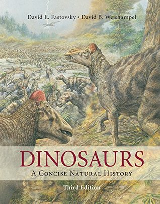

Dinosaurs: A Concise Natural History
Reseña por Jorge I. Zuluaga

Ver reseña en GoodReads (necesita cuenta)
Pero hacerlo con uno de las más fascinantes disciplinas científicas de la historia, que llamaré aquí la paleobiología de dinosaurios extintos, ha resultado un placer novedoso y desconocido para mí, que espero ahora repetir en otras áreas que no son de mi especialidad (biología o química por ejemplo).
Es cierto que "Dinosaurs, a concise natural history" no es un "libro de texto" convencional.
El más sencillo libro de texto de física, biología o casi cualquier disciplina científica, abarca normalmente varios tomos que se extienden por más de un millar de páginas, llenas normalmente de material técnico, secciones de preguntas y problemas.
En este caso, bastan casi 500 páginas, no menos repletas de diagramas que hay que descifrar, cajas de texto, pies de página, cientos de palabras de la terminología específica del área, referencias y secciones de preguntas, que permiten a estudiantes universitarios que no tienen en la paleontología o la paleobiología su especialidad, acercarse de manera "comprensiva" al mundo de los dinosaurios.
El texto esta escrito con un estilo literario desenfadado (aunque repito, sin dejar de ser un libro académico con sus características "literarias" únicas), más cercano a la divulgación que a los textos académicos de estilo frío y neutral. No sé si es esta la norma en otros textos en está u otras áreas de la biología, pero ciertamente es muy ajeno para mí en el mundo de la física o la astronomía.
Por la misma razón se me hizo a veces difícil leerlo en inglés (mi lengua materna, obviamente, es el castellano). Expresiones coloquiales y hasta "chistes" que pueden sonar muy naturales para un nativo, enredan a aquellos que solo entendemos "bien" el inglés de los "papers" científicos. Igualmente, el vocabulario puede llegar a ser un reto para los no nativos en la lengua y en el área, de modo que tener a la mano una herramienta para buscar el significado de palabras desconocidas no es una mala idea.
Me impresionaron, muy positivamente, la cantidad de locuciones francesas y latinas ("laissez a faire", "a toto", entre muchas otras que ya no recuerdo ni encuentro), que combinadas con un lenguaje informal, crean una interesante obra mezcla de buena literatura culta para todos.
Había leído en el pasado textos divulgativos en el tema, muchas páginas de enciclopedias y hasta libros para niños (no como niño, sino por culpa de mis hijos que se encarretaron con el tema y que fue por dónde empezó mi curiosidad por los dinosaurios). Pero leer un libro de texto de texto de dinosaurios ¡fue una verdadera y nueva experiencia!
En primer lugar está la organización del libro.
Al fin pude comprender aspectos de la paleobiología de los dinosaurios (que prefiero usar ahora en lugar de la "paleontología", aunque recuerden que estoy usando el término de forma libre y no en su acepción más técnica) que se me habían escapado o estaban implícitos en las páginas de las "enciclopedias".
Desde el papel central de la geocronología y la estratigrafía, pasando por la increíblemente relevante filogenia basada en cladogramas (diagramas de bifurcación), características diagnósticas y derivadas, etc. (sin la cuál es imposible entender hoy la relación entre los más de 500 géneros de dinosaurios desenterrados), hasta algunos finos detalles de la anatomía que apenas si se mencionan en los textos divulgativos.
¡Me siento feliz con esta novedosa y pequeña (porque sé que he tocado la punta del iceberg) carga de información y datos que me ayudaran también a entender descubrimiento futuros!
El segundo gran aspecto de leer un libro de texto de dinosaurios en lugar de un ensayo o una enciclopedia, es comprender, de forma más rigurosa, el mapa general de la increíblemente rica diversidad de especies y géneros, muchos conocidos en la divulgación y otros apenas descubiertos en los últimos años.
Casi el 60% del libro esta dedicado a describir los grandes "taxones" (grupos o familias biológicas "emparentadas") de los dinosaurios, divididos en dos grandes grupos partes: saurisquios (dinosaurios con cadera de reptil), que incluye a los excitantes terópodos gigantes (aplanadoras carnívoras) y las montañas come hojas de los saurópodos; y ornitisquios (dinosaurios con cadera de ave) que incluye a los dinosaurios con armadura (estegosaurios y anquilosaurios), dinosaurios cabezones (paquicefalosaurio), dinosaurios con cuernos (ceratopsidos como el famoso triceratopo) y dinosaurios con trompa de pato (hadrosaurios como el extraño paquicefalosaurio y el "papá de los pollitos" en la historia de los dinosaurios, el iguanodón).
Un capítulo especial esta dedicado a los dinosaurios aviares, o en palabras llanas a ¡los pájaros!. Ya no existe ninguna duda que las aves (de las que todavía viven 10.000 especies) son dinosaurios: no especies emperantados, ni descendientes, sino dinosaurios en todo su derecho. Por la misma razón, y como bien dicen los autores, la "era de los dinosaurios" en realidad nunca acabo: hoy hay más especies de aves que de mamíferos.
En tercer y último lugar esta la discusión amplia y detallada de algunos de los aspectos más apasionantes de la biología de los dinosaurios. Su "extraño" origen (posiblemente en uno o dos milagros), su evolución (y por lo mismo la emergencia de las características por las que los conocemos y que los hicieron tan exitosos), el espinoso problema de su termoregulación (enotérmicos - "sangre caliente" como mamíferos y aves o exotérmicos - "sangre fía" como los "lagartos", esa es la cuestión), un capítulo tan apasionante que todos deberíamos conocer; y finalmente el también debatido asunto de su extinción: ¿una o múltiples causas?; el veredicto de este libro (que se escribió en 2016) es que fue un asteroide. Punto.
Me pareció muy especial que en el penúltimo capítulo, dedicado a la historia de la paleontología y paleobiología de los dinosaurios, en donde se describen los personajes y hallazgos de 170 años de historia de desenterrar pedazos o esqueletos articulados completos y hacer conjeturas o probar hipótesis sobre su comportamiento, evolución y apariencia, los autores hayan dejado un aparte especial para describir a las estrellas nacientes de la paleontología. Es una decisión ciertamente osada (muchos buenos paleontólogos vivos y activos pueden quedar por fuera, incluyendo los mismos autores que tuvieron la decencia de no mencionarse, a pesar de sus propios aportes reconocidos). Pero al mismo tiempo, creo yo, fue una decisión muy acertada. Siempre he pensado que premiar a los "más viejos" (normalmente llenos ya de premios y reconocimientos), una costumbre muy común en la ciencia, es menos significativo que reconocer a los más jóvenes, que con ese reconocimiento pueden ver apalancada su carrera justo en el momento en el que más lo necesitan. Aplaudo entonces esta decisión de los autores y me gustaría ver (o imitar) la misma idea en otros libros de texto.
Aunque yo sé que no todos tenemos la paciencia (y posiblemente el tiempo - yo tampoco lo tengo, en cuyo caso debería decir más bien la osadía para tomar tiempo prestado de actividades más urgentes) para leer un libro de texto de dinosaurios, invitaría a todo los aficionados al tema que leen esta reseña, a los profesionales de la biología a los que seguramente les habrán preguntado más de una vez por un tema del que deberían saber más (pero que hay que reconocer, ¡es demasiado específico!) y en general a todos los lectores curiosos, que le den alguna vez una oportunidad a este maravilloso libro.
Y háganlo antes que sea demasiado tarde: la edición 3, que reseño aquí, fue escrita en 2016 y el área ¡esta cambiando a un ritmo frenético!
¡Larga vida los dinosaurios!